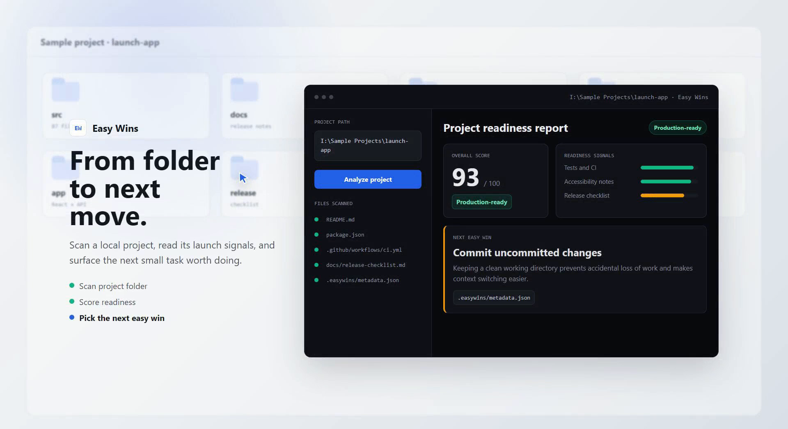

Easy Wins
Launch Ready Out of the Box
The tool that tells you exactly what to work on next.
Get Started
Why Easy Wins?
- Zero-Config — Point it at any project and go. No setup, no configuration files.
- Tells You What to Work On — Get actionable insights on exactly what to prioritize next.
- Claude Code Integration — Seamlessly works with Claude Code for enhanced AI-assisted development.
- Launch-Ready Out of the Box — Start shipping faster with pre-built workflows and best practices.
- Local-First — Your code stays on your machine. No cloud dependency, no data leaving your environment.